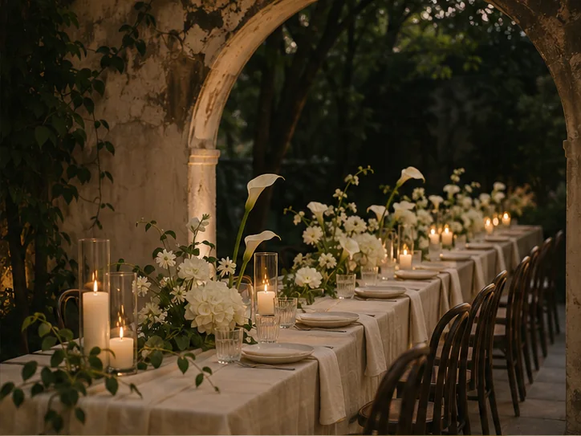
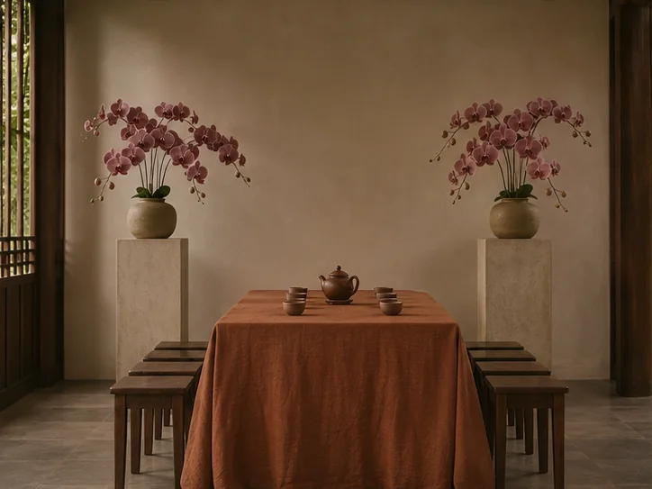

Đọc không gian trước khi chọn hoa.
Lối dẫn, ánh sáng và cách khách ngồi quyết định nơi hoa cần xuất hiện. Vòm Hoa dựng bảng màu từ ảnh địa điểm và chuẩn bị một phương án cho mỗi mốc của buổi lễ. Hoa ở tầm mắt khi chụp hình, thấp hơn khi khách ngồi ăn.

Bàn tiệc dưới vòm đá
